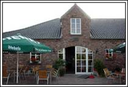

Frühstücksbuffet
Am Wochenende und an Feiertagen ein reichhaltiges Buffet mit allem, was das Herz begehrt – inklusive eines Glases Sekt. Wir reservieren gerne Plätze.
Mehr erfahren →Gemütlich einkehren, Kaffee genießen und hausgemachte Torten & Kuchen probieren – mitten im Grünen zwischen Geldern und Vernum.
Zum Frühstücksbuffet So finden Sie uns
Das Landcafé Steudle liegt zwischen Geldern und Vernum, inmitten von Wiesen und Feldern. Erst vor wenigen Jahren entstand es aus einer alten Kate und wurde liebevoll im ländlichen Stil eingerichtet.
Der Familienbetrieb bietet seinen Gästen eine reichhaltige Auswahl an Torten und Kuchen aus eigener Herstellung – nach Rezepten mit langer familiärer Tradition.
Im Sommer lädt die Terrasse nicht nur Radfahrer zu einem erfrischenden Getränk ein. Genießen Sie in Ruhe im Schatten oder auf einem sonnigen Plätzchen Ihren Kaffee. Am Wochenende servieren wir Ihnen ein reichhaltiges Früheröffnungsbuffet.
Unsere Kuchen & TortenAm Wochenende und an Feiertagen ein reichhaltiges Buffet mit allem, was das Herz begehrt – inklusive eines Glases Sekt. Wir reservieren gerne Plätze.
Mehr erfahren →Eine große Vielfalt an Kuchen und Torten aus eigener Herstellung nach traditionellen Rezepten. Lassen Sie sich vom Anblick verwöhnen.
Zur Galerie →In der warmen Jahreszeit bieten wir eine Auswahl verschiedener Eissorten und leckere Eisbecher.
Bitte beachten Sie: Wir akzeptieren keine Kartenzahlung.
Samstag, Sonntag und an Feiertagen bieten wir keine Küche an.